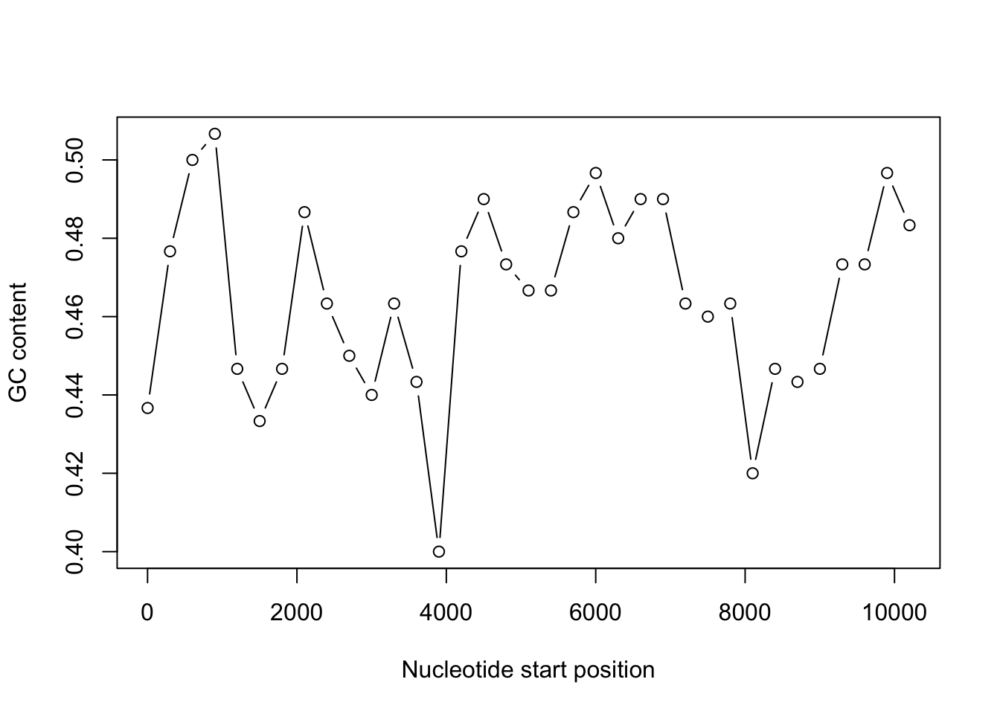

Chapter 44 Local variation in GC content
By: Avril Coghlan.
Adapted, edited and expanded: Nathan Brouwer under the Creative Commons 3.0 Attribution License (CC BY 3.0).
This is a modification of “DNA Sequence Statistics (1)” from Avril Coghlan’s A little book of R for bioinformatics.. Almost all of text and code was originally written by Dr. Coghlan and distributed under the Creative Commons 3.0 license.
Preliminaries
library(rentrez)
library(seqinr)
library(compbio4all)44.0.1 Note on the biology in this section
Some of the biology in this tutorial appears to be out of date. For example, using variation in GC content to ID horizontal gene transfer is currently considered to be biased. The examples are still good for practicing R skills.
44.1 Vocabulary
- GC content
- horizontal transfer
- local variation in GC content …
44.2 Reading sequence data with rentrez::entrez_fetch
In a previous section you learned how to use to search for and download the sequence data for a given NCBI accession from the NCBI Sequence Database, either via the NCBI website using entrez_fetch() from the rentrez package.
For example, you could have downloaded the sequence data for a the DEN-1 Dengue virus sequence (NCBI accession NC_001477), and stored it on a file on your computer (eg. dengue_fasta.fasta).
Download direct:
dengueseq_fasta <- entrez_fetch(db = "nucleotide",
id = "NC_001477",
rettype = "fasta")From combio4all package
data(dengueseq_fasta)As noted before, the file gets downloaded in FASTA format, which isn’t directly useable in R
## [1] ">NC_001477.1 Dengue virus 1, complete genome\nAGTTGTTAGTCTACGTGGACCGACAAGAACAGTTTCGAATCGGAAGCTTGCTTAACGTAGTTCTAACAGT\nTTTTTATTAGAGAGCAGATCTCTGATGAACAACCAACGGAAAAAGACGGGTCGACCGTCTTTCAATATGC\nTGAAACGCGCGAGAAACCGCGTGTCAACTGTTTCACAGTTGGCGAAGAGATTCTCAAAAGGAT"We can convert our FASTA object into a vector using the function fasta_cleaner()
header. <- ">NC_001477.1 Dengue virus 1, complete genome"
dengueseq_vector <- fasta_cleaner(dengueseq_fasta)Once you have retrieved a sequence from the NCBI Sequence Database and stored it in a vector variable such as dengueseq_vector in the example above, it is possible to extract subsequence of the sequence by typing the name of the vector (eg. dengueseq_vector) followed by the square brackets containing the indices for those nucleotides. For example, to obtain nucleotides 452-535 of the DEN-1 Dengue virus genome, we can type:
dengueseq_vector[452:535]## [1] "C" "G" "A" "G" "G" "G" "G" "G" "A" "G" "A" "G" "C" "C" "G" "C" "A" "C" "A"
## [20] "T" "G" "A" "T" "A" "G" "T" "T" "A" "G" "C" "A" "A" "G" "C" "A" "G" "G" "A"
## [39] "A" "A" "G" "A" "G" "G" "A" "A" "A" "A" "T" "C" "A" "C" "T" "T" "T" "T" "G"
## [58] "T" "T" "T" "A" "A" "G" "A" "C" "C" "T" "C" "T" "G" "C" "A" "G" "G" "T" "G"
## [77] "T" "C" "A" "A" "C" "A" "T" "G"44.3 Local variation in GC content
In a previous section, you learned that to find out the GC content of a genome sequence (percentage of nucleotides in a genome sequence that are Gs or Cs), you can use the GC() function in the seqinr package. For example, to find the GC content of the DEN-1 Dengue virus sequence that we have stored in the vector dengueseq_vector, we can type:
seqinr::GC(dengueseq_vector)## [1] 0.4666977The output of the GC() is the fraction of nucleotides in a sequence that are Gs or Cs, so to convert it to a percentage we need to multiply by 100.
seqinr::GC(dengueseq_vector)*100## [1] 46.66977Thus, the GC content of the DEN-1 Dengue virus genome is about 0.467 or 46.7%.
Although the GC content of the whole DEN-1 Dengue virus genome sequence is about 46.7%, there is probably local variation in GC content within the genome. That is, some regions of the genome sequence may have GC contents quite a bit higher than 46.7%, while some regions of the genome sequence may have GC contents that are quite a big lower than 46.7%. Local fluctuations in GC content within the genome sequence can provide different interesting information, for example, they may reveal cases of horizontal transfer or reveal biases in mutation.
If a chunk of DNA has moved by horizontal transfer from the genome of a species with low GC content to a species with high GC content, the chunk of horizontally transferred DNA could be detected as a region of unusually low GC content in the high-GC recipient genome.
On the other hand, a region unusually low GC content in an otherwise high-GC content genome could also arise due to biases in mutation in that region of the genome, for example, if mutations from Gs/Cs to Ts/As are more common for some reason in that region of the genome than in the rest of the genome.
44.4 A sliding window analysis of GC content
In order to study local variation in GC content within a genome sequence, we could calculate the GC content for small chunks of the genome sequence. The DEN-1 Dengue virus genome sequence is 10735 nucleotides long. To study variation in GC content within the genome sequence, we could calculate the GC content of chunks of the DEN-1 Dengue virus genome, for example, for each 2000-nucleotide chunk of the genome sequence:
seqinr::GC(dengueseq_vector[1:2000]) # Calculate the GC content of nucleotides 1-2000 of the Dengue genome## [1] 0.465seqinr::GC(dengueseq_vector[2001:4000]) # Calculate the GC content of nucleotides 2001-4000 of the Dengue genome## [1] 0.4525From the output of the above calculations, we see that the region of the DEN-1 Dengue virus genome from nucleotides 1-2000 has a GC content of 46.5%, while the region of the Dengue genome from nucleotides 2001-4000 has a GC content of about 45.3%. Thus, there seems to be some local variation in GC content within the Dengue genome sequence.
Instead of typing in the commands above to tell R to calculate the GC content for each 2000-nucleotide chunk of the DEN-1 Dengue genome, we can use a for loop to carry out the same calculations, but by typing far fewer commands. That is, we can use a for loop to take each 2000-nucleotide chunk of the DEN-1 Dengue virus genome, and to calculate the GC content of each 2000-nucleotide chunk. Below we will explain the following for loop that has been written for this purpose:
starts <- seq(1, length(dengueseq_vector)-2000, by = 2000)
starts## [1] 1 2001 4001 6001 8001 n <- length(starts) # Find the length of the vector "starts"
for (i in 1:n) {
chunk <- dengueseq_vector[starts[i]:(starts[i]+1999)]
chunkGC <- GC(chunk)
print (chunkGC)
}## [1] 0.465
## [1] 0.4525
## [1] 0.4705
## [1] 0.479
## [1] 0.4545The command starts <- seq(1, length(dengueseq_vector)-2000, by = 2000) stores the result of the seq() command in the vector starts, which contains the values 1, 2001, 4001, 6001, and 8001.
We set the variable n to be equal to the number of elements in the vector starts, so it will be 5 here, since the vector starts contains the five elements 1, 2001, 4001, 6001 and 8001. The line “for (i in 1:n)” means that the counter i will take values of 1-5 in subsequent cycles of the for loop. The for loop above is spread over several lines. However, R will not execute the commands within the for loop until you have typed the final “}” at the end of the for loop and pressed “Return”.
Each of the three commands within the for loop are carried out in each cycle of the loop. In the first cycle of the loop, i is 1, the vector variable chunk is used to store the region from nucleotides 1-2000 of the Dengue virus sequence, the GC content of that region is calculated and stored in the variable chunkGC, and the value of chunkGC is printed out.
In the second cycle of the loop, i is 2, the vector variable chunk is used to store the region from nucleotides 2001-4000 of the Dengue virus sequence, the GC content of that region is calculated and stored in the variable chunkGC, and the value of chunkGC is printed out. The loop continues until the value of i is 5. In the fifth cycle through the loop, the value of i is 5, and so the GC content of the region from nucleotides 8001-10000 is printed out.
Note that we stop the loop when we are looking at the region from nucleotides 8001-10000, instead of continuing to another cycle of the loop where the region under examination would be from nucleotides 10001-12000. The reason for this is because the length of the Dengue virus genome sequence is just 10735 nucleotides, so there is not a full 2000-nucleotide region from nucleotide 10001 to the end of the sequence at nucleotide 10735.
The above analysis of local variation in GC content is what is known as a sliding window analysis of GC content. By calculating the GC content in each 2000-nucleotide chunk of the Dengue virus genome, you are effectively sliding a 2000-nucleotide window along the DNA sequence from start to end, and calculating the GC content in each non-overlapping window (chunk of DNA).
Note that this sliding window analysis of GC content is a slightly simplified version of the method usually carried out by bioinformaticians. In this simplified version, we have calculated the GC content in non-overlapping windows along a DNA sequence. However, it is more usual to calculate GC content in overlapping windows along a sequence, although that makes the code slightly more complicated.
44.5 A sliding window plot of GC content
It is common to use the data generated from a sliding window analysis to create a sliding window plot of GC content. To create a sliding window plot of GC content, you plot the local GC content in each window of the genome, versus the nucleotide position of the start of each window. We can create a sliding window plot of GC content by typing:
starts <- seq(1, length(dengueseq_vector)-2000, by = 2000)
n <- length(starts) # Find the length of the vector "starts"
chunkGCs <- numeric(n) # Make a vector of the same
#length as vector "starts",
# but just containing zeroes
for (i in 1:n) {
chunk <- dengueseq_vector[starts[i]:(starts[i]+1999)]
chunkGC <- GC(chunk)
print(chunkGC)
chunkGCs[i] <- chunkGC
}## [1] 0.465
## [1] 0.4525
## [1] 0.4705
## [1] 0.479
## [1] 0.4545 plot(starts,
chunkGCs,
type="b",
xlab="Nucleotide start position",
ylab="GC content")
In the code above, the line chunkGCs <- numeric(n) makes a new vector chunkGCs which has the same number of elements as the vector starts (5 elements here). This vector chunkGCs is then used within the for loop for storing the GC content of each chunk of DNA.
After the loop, the vector starts can be plotted against the vector chunkGCs using the plot() function, to get a plot of GC content against nucleotide position in the genome sequence. This is a sliding window plot of GC content.
You may want to use the code above to create sliding window plots of GC content of different species’ genomes, using different window sizes. Therefore, it makes sense to use a function to do the sliding window plot, that can take the windo wsize that the user wants to use and the sequence that the user wants to study as arguments (inputs).
The compbio4all has a function plot_sliding_window() that does this.
This function will make a sliding window plot of GC content for a particular input sequence inputseq specified by the user, using a particular window size window size specified by the user. Once you have typed in this function once, you can use it again and again to make sliding window plots of GC contents for different input DNA sequences, with different window sizes. For example, you could create two different sliding window plots of the DEN-1 Dengue virus genome sequence, using window sizes of 3000 and 300 nucleotides, respectively:
plot_sliding_window(3000, dengueseq_vector)## [1] 0.4646667
## [1] 0.4606667
## [1] 0.4653333
plot_sliding_window(300, dengueseq_vector)## [1] 0.4366667
## [1] 0.4766667
## [1] 0.5
## [1] 0.5066667
## [1] 0.4466667
## [1] 0.4333333
## [1] 0.4466667
## [1] 0.4866667
## [1] 0.4633333
## [1] 0.45
## [1] 0.44
## [1] 0.4633333
## [1] 0.4433333
## [1] 0.4
## [1] 0.4766667
## [1] 0.49
## [1] 0.4733333
## [1] 0.4666667
## [1] 0.4666667
## [1] 0.4866667
## [1] 0.4966667
## [1] 0.48
## [1] 0.49
## [1] 0.49
## [1] 0.4633333
## [1] 0.46
## [1] 0.4633333
## [1] 0.42
## [1] 0.4466667
## [1] 0.4433333
## [1] 0.4466667
## [1] 0.4733333
## [1] 0.4733333
## [1] 0.4966667
## [1] 0.4833333
44.5.1 Over-represented and under-represented DNA words
In the previous chapter, you learned that the count() function in the seqinr R package can calculate the frequency of all DNA words of a certain length in a DNA sequence. For example, if you want to know the frequency of all DNA words that are 2 nucleotides long in the Dengue virus genome sequence, you can type:
dengueseq_vector_lc <- tolower(dengueseq_vector)
seqinr::count(dengueseq_vector_lc, 2)##
## aa ac ag at ca cc cg ct ga gc gg gt ta tc tg tt
## 1108 720 890 708 901 523 261 555 976 500 787 507 440 497 832 529It is interesting to identify DNA words that are two nucleotides long (dinucleotides, i.e.. “AT”, “AC”, etc.) that are over-represented or under-represented in a DNA sequence. If a particular DNA word is over-represented in a sequence, it means that it occurs many more times in the sequence than you would have expected by chance. Similarly, if a particular DNA word is under-represented in a sequence, it means it occurs far fewer times in the sequence than you would have expected.
A statistic called p (Rho) is used to measure how over- or under-represented a particular DNA word is. For a 2-nucleotide (dinucleotide) DNA word p is calculated as:
p(xy) = fxy/(fx*fy),
where fxy and fx are the frequencies of the DNA words xy and x in the DNA sequence under study. For example, the value of for the DNA word “TA” can be calculated as: p(TA) = fTA/(fT* fA), where fTA, fT and fA are the frequencies of the DNA words “TA”, “T” and “A” in the DNA sequence.
The idea behind the p statistic is that, if a DNA sequence had a frequency fx of a 1-nucleotide DNA word x, and a frequency fy of a 1-nucleotide DNA word y, then we expect the frequency of the 2-nucleotide DNA word xy to be fx* fy. That is, the frequencies of the 2-nucleotide DNA words in a sequence are expected to be equal the products of the specific frequencies of the two nucleotides that compose them. If this were true, then p would be equal to 1. If we find that p is much greater than 1 for a particular 2-nucleotide word in a sequence, it indicates that that 2-nucleotide word is much more common in that sequence than expected (i.e.. it is over-represented).
For example, say that your input sequence has only 5% Ts (i.e.. fT = 0.05). In a random DNA sequence with 5% Ts, you would expect to see the word “TT” very infrequently. In fact, we would only expect 0.05 * 0.05=0.0025 (0.25%) of 2-nucleotide words to be TTs (i.e.. we expect fTT = fT* fT). This is because Ts are rare, so they are expected to be adjacent to each other very infrequently if the few Ts are randomly scattered throughout the DNA. Therefore, if you see lots of TT 2-nucleotide words in your real input sequence (eg. fTT = 0.3, so p = 0.3/0.0025 = 120), you would suspect that natural selection has acted to increase the number of occurrences of the TT word in the sequence (presumably because it has some beneficial biological function).
To find over-represented and under-represented DNA words that are 2 nucleotides long in the DEN-1 Dengue virus sequence, we can calculate the p statistic for each 2-nucleotide word in the sequence. For example, given the number of occurrences of the individual nucleotides A, C, G and T in the Dengue sequence, and the number of occurrences of the DNA word GC in the sequence (500, from above), we can calculate the value of p for the 2-nucleotide DNA word “GC”, using the formula p(GC) = fGC/(fG * fC), where fGC, fG and fC are the frequencies of the DNA words “GC”, “G” and “C” in the DNA sequence:
count(dengueseq_vector_lc, wordsize = 1) # Get the number of occurrences of 1-nucleotide DNA words##
## a c g t
## 3426 2240 2770 2299 2770/(3426+2240+2770+2299) # Get fG## [1] 0.2580345 2240/(3426+2240+2770+2299) # Get fC## [1] 0.2086633 count(dengueseq_vector_lc, 2) # Get the number of occurrences of 2-nucleotide DNA words##
## aa ac ag at ca cc cg ct ga gc gg gt ta tc tg tt
## 1108 720 890 708 901 523 261 555 976 500 787 507 440 497 832 529500/(1108+720+890+708+901+523+261+555+976+500+787+507+440+497+832+529) # Get fGC## [1] 0.04658096 0.04658096/(0.2580345*0.2086633) # Get rho(GC)## [1] 0.8651364We calculate a value of p(GC) of approximately 0.865. This means that the DNA word “GC” is about 0.865 times as common in the DEN-1 Dengue virus sequence than expected. That is, it seems to be slightly under-represented.
Note that if the ratio of the observed to expected frequency of a particular DNA word is very low or very high, then we would suspect that there is a statistical under-representation or over-representation of that DNA word. However, to be sure that this over- or under-representation is statistically significant, we would need to do a statistical test. We will not deal with the topic of how to carry out the statistical test here.
44.6 Summary
In this chapter, you will have learned to use the following functions:
seq()for creating a sequence of numbersprint()for printing out the value of a variableplot()for making a plot (eg. a scatterplot)numeric()for making a numeric vector of a particular length
All of these functions belong to the standard installation of R. You also learned how to use for loops to carry out the same operation again and again, each time on different inputs.
44.7 Further Reading
For background reading on DNA sequence statistics, it is recommended to read Chapter 1 of Introduction to Computational Genomics: a case studies approach by Cristianini and Hahn (Cambridge University Press; www.computational-genomics.net/book/).
For more in-depth information and more examples on using the seqinr package for sequence analysis, look at the seqinr documentation, http://pbil.univ-lyon1.fr/software/seqinr/doc.php?lang=eng.
There is also a very nice chapter on “Analyzing Sequences”, which includes examples of using seqinr for sequence analysis, in the book Applied statistics for bioinformatics using R by Krijnen (available online at cran.r-project.org/doc/contrib/Krijnen-IntroBioInfStatistics.pdf).
44.8 Acknowledgements
In “A little book…” Coghlan write “Many of the ideas for the examples and exercises for this chapter were inspired by the Matlab case studies on Haemophilus influenzae (www.computational-genomics.net/case_studies/haemophilus_demo.html) and Bacteriophage lambda (http://www.computational-genomics.net/case_studies/lambdaphage_demo.html) from the website that accompanies the book Introduction to Computational Genomics: a case studies approach by Cristianini and Hahn (Cambridge University Press; www.computational-genomics.net/book/).”
44.9 Exercises
Answer the following questions, using the R package. For each question, please record your answer, and what you typed into R to get this answer.
Model answers to the exercises are given in Answers to the exercises on DNA Sequence Statistics.
- Draw a sliding window plot of GC content in the DEN-1 Dengue virus genome, using a window size of 200 nucleotides. Do you see any regions of unusual DNA content in the genome (eg. a high peak or low trough)? Make a sketch of each plot that you draw. At what position (in base-pairs) in the genome is there the largest change in local GC content (approximate position is fine here)? Compare the sliding window plots of GC content created using window sizes of 200 and 2000 nucleotides. How does window size affect your ability to detect differences within the Dengue virus genome?
- Draw a sliding window plot of GC content in the genome sequence for the bacterium Mycobacterium leprae strain TN (accession NC_002677) using a window size of 20000 nucleotides. Do you see any regions of unusual DNA content in the genome (eg. a high peak or low trough)?
- Make a sketch of each plot that you drew for the previous quetion. Write down the approximate nucleotide position of the highest peak or lowest trough that you see. Why do you think a window size of 20000 nucleotides was chosen? What do you see if you use a much smaller window size (eg. 200 nucleotides) or a much larger window size (eg. 200,000 nucleotides)?
- Advanced: Write a function to calculate the AT content of a DNA sequence (i.e.. the fraction of the nucleotides in the sequence that are As or Ts). What is the AT content of the Mycobacterium leprae TN genome? Hint: use the function count() to make a table containing the number of As, Gs, Ts and Cs in the sequence. Remember that function count() produces a table object, and you can access the elements of a table object using double square brackets. Do you notice a relationship between the AT content of the Mycobacterium leprae TN genome, and its GC content?
- Advanced: Write a function to draw a sliding window plot of AT content. Use it to make a sliding window plot of AT content along the Mycobacterium leprae TN genome, using a window size of 20000 nucleotides. Do you notice any relationship between the sliding window plot of GC content along the Mycobacterium leprae genome, and the sliding window plot of AT content? Make a sketch of the plot that you draw.
- Is the 3-nucleotide word GAC GC over-represented or under-represented in the Mycobacterium leprae TN genome sequence? What is the frequency of this word in the sequence? What is the expected frequency of this word in the sequence? What is the p (Rho) value for this word? How would you figure out whether there is already an R function to calculate p (Rho)? Is there one that you could use?